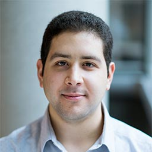
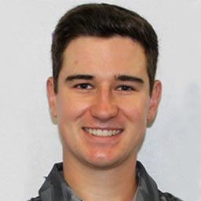
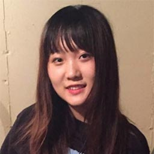

Web Wizard
I am a recent graduate of Western University from the Faculty of Science with a Major in Medical Sciences. Currently, I am enrolled in the Computer Science program through Western’s Continuing Studies program. Through this program I hope to gain knowledge and skills in the area of web design and software programming. My skills acquired so far include: in-class experience with Python, Java, C, and C++, and basic knowledge and application of HTML, Photoshop, and Illustrator. My hobbies include: learning to use Photoshop and Illustrator, kayaking, reading, running, and Taekwondo.
Back-End Champion
I’m a fourth year Social Science BMOS student with a Specialization in Finance and a Major in Computer Science. I have been interested in Computer Science since I was a little kid, and I’ve been keeping up with news in the industry; I know a little bit about everything there is to know. I have some experience with C, Java, Julia, HTML, CSS, Adobe Photoshop/Premiere Pro/Audition/Dreamweaver. I am interested in film shooting and editing, and plan on opening a studio with my friends soon.
Algorithm King
I am a second year student pursuing the Honors Specialization in Computer Science. I am fascinated by algorithms and efficiency. I am familiar with Python, Java, C, MySQL, and my skills include web scraping, REST API and mobile backend development. In my free time, I enjoy being active and playing the piano. I love golf, and I’m a member of the varsity golf team at Western.
Jack-of-All-Trades
I am currently a second year Computer Science student at Western University, intending to complete a dual degree with Business Administration. I love entrepreneurship and am certainly excited to ship a new product with this team. In my free time I tend to work on personal projects, and attend Hackathons to test out ideas and new technologies. I have experience in full stack web development based on the LAMP stack (Linux, Apache, mySQL, PHP). I also enjoy graphic design and making compelling and intuitive user interfaces.
Code Crusher
I’m currently a third year student in Computer Science completing Honor Specialization in Computer Science. I like programming, and I learned Java, C and a little Javascript (and HTML thing). I know a lot about Adobe Photoshop, also, I’ve learned some video editing and sound editing things. I would like to do both, but I prefer to do back end because I like programming and coding more than website. If I need to learn anything, I’m willing to. This is my first time to complete a big group project, so I’m very excited about it!
Front to Back Expert
I am a Fourth year student at Western University in the Faculty of Science currently studying Biology and Computer Science. I learned most of my computer skills through courses at Western and skills and languages that I learned include Java, Python, C, mySQL, and some HTML. In my spare time, I love to build computers, play games, and go to the gym. From this project, I hope to be able to have a strong foundation in putting together a functioning web application in both the front end and back end.
Code Champion
I am a second year student at Western University pursuing an Honours Specialization in Computer Science. I have experience with the course work languages: Java, Python, and C. I haven’t had any experience working with front end design so I am looking forward to learning it. I also haven’t worked in a true team programming environment on a project of this scale, so I am excited to learn about the design process of software. In my free time, I play basketball, snowboard, and play games.
Creative Guru
I am currently a third year student completing an honors double major in Medical Physics and Computer Science. I’ve had experience in Java, C and Matlab, with some exposure to Python, and HTML/JavaScript as well. I currently work in a physics lab where I do data analysis using Matlab. Interested in implementing skills learned in the software project management course (3377) in this project.
Visual Expert
I am a third year Computer Science student at Western University. I have experience using Python, Java, mySQL, HTML, and C++. In addition, I have worked on group projects in the past.